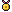
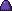

Objetos equipables de PokéSurvivor
Durante la partida puedes encontrar objetos equipables: los jefes y los legendarios siempre sueltan uno, y también salen en los cofres y en el evento de Munchlax. Llevas uno a la vez, dos con la mejora Segundo objeto y tres con Tercer objeto. Si encuentras otro con los huecos llenos, eliges cuál cambias. Duran lo que dura la partida. Con la mejora Objeto inicial empiezas con el que elijas: se compran en la Tienda Kecleon a 500 (menos los que dan experiencia).
Para llevar
- RestosRecuperas un 1,5% de tu vida por segundo.
- Cinta Elección+40% de daño, pero no puedes cambiar de movimiento.
 Garra Rápida-20% de recarga en todos tus movimientos.
Garra Rápida-20% de recarga en todos tus movimientos. Banda FocusUn golpe que te dejaría KO te deja con 1 de vida (cada 60 s).
Banda FocusUn golpe que te dejaría KO te deja con 1 de vida (cada 60 s). Cascabel ConchaRecuperas vida con el daño que haces.
Cascabel ConchaRecuperas vida con el daño que haces.
Moneda Amuleto+50% de Pokémonedas al acabar la run. Huevo Suerte+30% de experiencia.
Huevo Suerte+30% de experiencia.- Vidasfera+30% de daño, pero cada ataque te quita un poco de vida.
- Pañuelo Elección+35% de velocidad.
- Casco DentadoLos que te golpean cuerpo a cuerpo reciben daño.
 Chaleco Asalto+20% de reducción de daño recibido.
Chaleco Asalto+20% de reducción de daño recibido. Botas GruesasLas trampas no te afectan, la lava no te quema y el agua no te frena.
Botas GruesasLas trampas no te afectan, la lava no te quema y el agua no te frena. MetrónomoCada 3 s seguidos con el mismo ataque: +6% de daño, hasta +48%. Se pierde al cambiar de ataque.
MetrónomoCada 3 s seguidos con el mismo ataque: +6% de daño, hasta +48%. Se pierde al cambiar de ataque.- Hierba CopiaLos poderes de los altares te duran el doble.

Capa FurtivaLos enemigos que curan o ponen escudos no ayudan a los que tienes cerca. Guante de Boxeo+30% de daño con los ataques físicos cuerpo a cuerpo.
Guante de Boxeo+30% de daño con los ataques físicos cuerpo a cuerpo. SupertaponesLos ataques con aviso en el suelo te quitan un 30% menos.
SupertaponesLos ataques con aviso en el suelo te quitan un 30% menos.- Espray Bucal+25% de Ataque Especial durante 8 s al cambiar de ataque (cada 12 s como mucho).
- Dado TrucadoLos ataques con varios proyectiles o golpes lanzan uno más.
 Gafa ProtectoraLos climas no te debilitan ni te frenan (sí te potencian).
Gafa ProtectoraLos climas no te debilitan ni te frenan (sí te potencian). Amuleto Exp.+20% de experiencia y +10% de Pokémonedas.
Amuleto Exp.+20% de experiencia y +10% de Pokémonedas. Incienso Suerte+60% de Pokémonedas, pero −15% de daño.
Incienso Suerte+60% de Pokémonedas, pero −15% de daño. Incienso RaroLos shiny salvajes salen el doble de a menudo (en grupo, si lo lleva el anfitrión).
Incienso RaroLos shiny salvajes salen el doble de a menudo (en grupo, si lo lleva el anfitrión). Gafas RadarUn minimapa arriba a la derecha con lo que hay cerca: jefes, shiny, cofres, altares, manantiales, objetos y la grieta.
Gafas RadarUn minimapa arriba a la derecha con lo que hay cerca: jefes, shiny, cofres, altares, manantiales, objetos y la grieta.
De un solo uso
Salen como premio y no ocupan hueco: el Caramelo Exp. y los Mochis se usan al cogerlos; las bayas se guardan (una de cada) y se gastan solas cuando hacen falta.
- Caramelo Exp.Subes un nivel al momento.
- Baya ZidraAl bajar del 25% de vida, te cura un 30%.
- Baya AtaniaAl bajar del 25% de vida, +30% de daño durante 10 s.
- Baya MelocSi algo te frena, te limpia y te hace inmune a frenazos 5 s.
- Mochi Vida+5% de vida máxima hasta acabar la run.
- Mochi Ataque+5% de daño hasta acabar la run.
- Mochi Velocidad+5% de velocidad hasta acabar la run.
- Mochi DefensaRecibes un 5% menos de daño hasta acabar la run.
Esferas
Como en Mundo Misterioso: hasta 4 a la vez, se usan con las teclas 5-8 (o tocándolas) y sólo duran la partida.
- SoporesferaDuerme a los enemigos de la pantalla 4 s (a los jefes, 1 s).
- RalentosferaLos enemigos de la pantalla van un 50 % más lentos durante 8 s (los jefes, un 20 %).
- RafagaesferaLanza lejos a los enemigos que tienes cerca (a los jefes, la mitad).
- Focosfera+25 % de crítico durante 15 s, para ti y los compañeros cercanos.
- LuminosferaVes más campo (la cámara se aleja) durante 15 s, tú y los compañeros cercanos.
- Rapidosfera+40 % de velocidad durante 10 s, para ti y los compañeros cercanos.